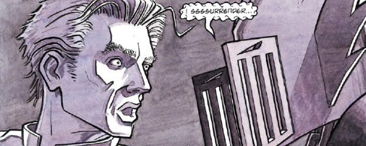

One of the four core Dark Judges, Fear has had a couple of tales under his own banner, but most of his appearances are listed under The Dark Judges or Deadworld sections. Often split off from the others - he was the first to be trapped in the dimensional void by Anderson during the Four Dark Judges (aka Revenge) sequence, and the only one to be captured in the Dark Justice debacle.
His treatment by Kek-W during The Fall of Deadworld expands the mythos by indicating that Fear himself may just be the helmet, capable of possessing anyone who is driven to wear it, and in Dreams of Deadworld there's a revelation that he is such an embodiment of fear that he also is riven by doubt, and obsessed with past failures.
Art by Jim O'Ready
| Story Title | Parts | Pages | w indicates a wraparound coverCovers | Year(s) | Issues | Writer | Artist | Colourist | Letterer |
|---|---|---|---|---|---|---|---|---|---|
From Plagues of Necropolis Featuring Judge Fear & Judge Mortis.Sleeping Enemy | 1 | 7 | Jason Brashill 1 | 1995 | Reprints: M355 (supplement)M2.78 | Si Spencer | Jim O'Ready | <-- | Gordon Robson |
| Memories Are Made of This | 1 | 9 | 0 | 2018 | 2073 | Kek-W | Dan Cornwell | [b&w] | Annie Parkhouse |
| >> Text Stories << | |||||||||
No supertitle.Judge Fear's Big Day Out | 1 | 4 | 0 | 2004 | M224 | Simon Spurrier | Cam Smith | Adrian Salmon | n/a |
| year | episodes | pages |
| 1993 | 0 | 0 |
| 1994 | 0 | 0 |
| 1995 | 1 | 7 |
| 1996 | 0 | 0 |
| 1997 | 0 | 0 |
| 1998 | 0 | 0 |
| 1999 | 0 | 0 |
| 2000 | 0 | 0 |
| 2001 | 0 | 0 |
| 2002 | 0 | 0 |
| 2003 | 0 | 0 |
| 2004 | 0 | 0 |
| 2005 | 0 | 0 |
| 2006 | 0 | 0 |
| 2007 | 0 | 0 |
| 2008 | 0 | 0 |
| 2009 | 0 | 0 |
| 2010 | 0 | 0 |
| 2011 | 0 | 0 |
| 2012 | 0 | 0 |
| 2013 | 0 | 0 |
| 2014 | 0 | 0 |
| 2015 | 0 | 0 |
| 2016 | 0 | 0 |
| 2017 | 0 | 0 |
| 2018 | 1 | 9 |
| 2019 | 0 | 0 |
| 2020 | 0 | 0 |
Comic strip data (excludes other content):